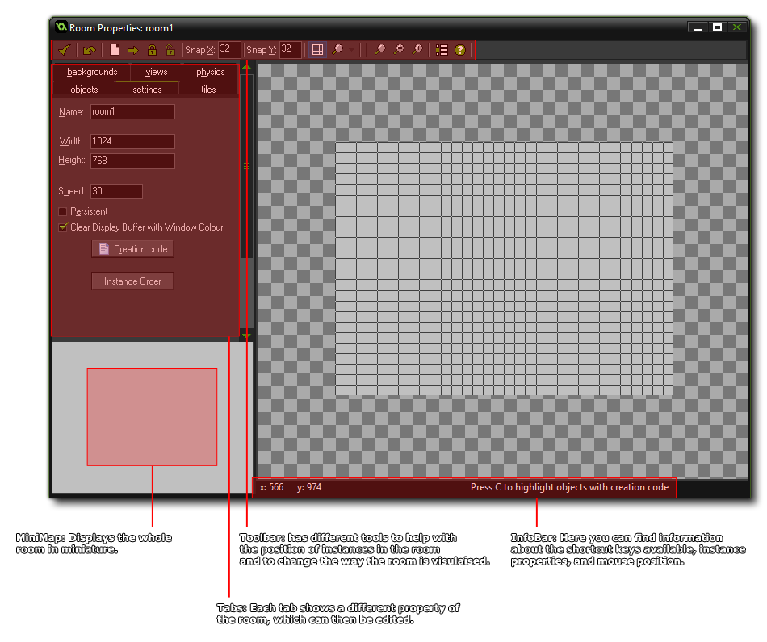
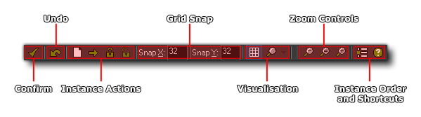

All games that you make in GameMaker: Studio need at
least one room to run (but can have many, many more) , and a room
is just a space where you place instances of the objects that make
up your game. When you first create a room in your resource tree
you will be presented with a new window with which to edit its
properties, something like this:

As you can see, most of the room editor is taken up with the a
visual representation of the room itself, where you place the
objects, tiles and backgrounds for your game, but around the edges
there are a number of buttons, tabs and information bars that help
you to create your game.
At the top of the form there is the tool bar, which has a number of buttons that refer to different actions in the room editor. 
- Confirm: Clicking this button will close the room editor and save any changes you have made. Beware, as this will not warn you that the room has changed, as clicking the close button would do, but will just save directly any changes you have made. However, depending on the GameMaker: Studio preferences, you may be asked if you want to remove any instances that have been placed outside the room or not.
- Undo: This is a simple, one level, undo button. By one level, we mean that only the last action performed will be undone.
- Instance Actions: These buttons allow you to change certain properties of the instances (and tiles if you are in the "Tile" tab) in the room, specifically: clearing all instances from the room, shifting all instances a set amount along the x and/or y axis of the room, locking instances (so they cannot be moved or edited) and unlocking instances.
- Grid Snap: These values can be changed to make instances snap to a different grid resolution. A value of 0 will switch snapping off.
- Visualisation: By clicking this you will open a drop-down menu where you can switch on or off the visualisation of many room elements, like instances, tiles, views etc... Here you can also change the grid type from being the regular square grid to a diamond "isometric" grid. You can enable/disable the grid overlay by clicking the grid icon.
- Zoom Controls: The main view of the room editor can be zoomed in and out to show more or less detail either using these controls or by scrolling the mouse wheel (if you have one).
- Instance Order and Shortcuts: Both these buttons will bring up separate windows, with the first giving you the option to change the order in which instances are created at room start (see the Room Settings page for more information), and the second shows the available keyboard shortcuts that you can use when editing rooms.
As you can imagine, this is a miniature representation of the
whole room. you can click and drag the current area around on the
minimap and the main view will scroll and pan to match, or you can
just click on the minimap to have the main view jump to that
position.
While placing tiles and instances within a room, you often need
extra information about them at a glance. For that you have the
Info Bar which shows the current mouse position within the room,
the id and object_index of the instance that the mouse is currently
over, and further context sensitive information like whether the
instance has code or not in its room create event.
At the left you will see six tabs that open separate sub-pages in the area on the left, but in this section we will only deal with the three most important ones: The settings tab, the backgrounds tab and the objects tabs. Further information on these tabs can be found in the sections below:
For information on the other tabs as well as the advanced functions available to you in the room editor please see the section - Advanced Use: More About Rooms.